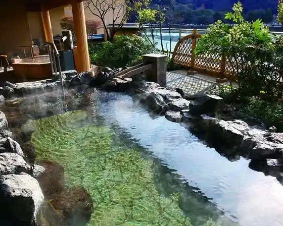
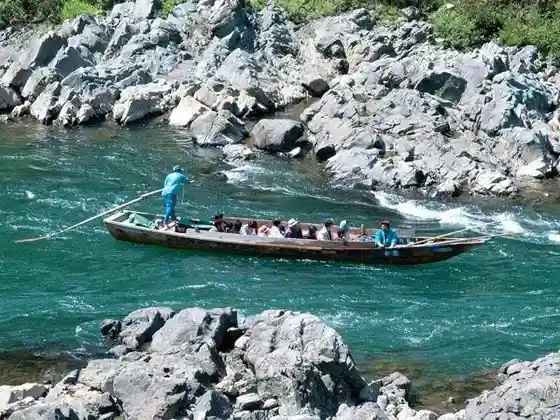
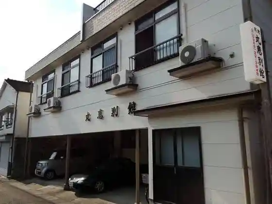

Kikurage Honpo
Hitoyoshi, Kumamoto · 0966-22-8488 · Official / source link
Aoi Aso Shrine (Kokuho)
Hitoyoshi, Kumamoto · 0966-22-2274 · Official / source link
Hitoyoshi Onsen
Hitoyoshi, Kumamoto · 0966-22-1370 · Official / source link

Kuma Kawa Kudari
Hitoyoshi, Kumamoto · 0966-22-5555 · Official / source link

Maru Megumi Bekkan
Hitoyoshi, Kumamoto · 0966-22-3948 · Official / source link

Maru Megumi Honkan
Hitoyoshi, Kumamoto · 0966-22-2291 · Official / source link
Hitoyoshi Onsen Ayu Village
Hitoyoshi, Kumamoto · 0966-22-2171 · Official / source link
Hitoyoshi Onsen Nabeya
Hitoyoshi, Kumamoto · 0966-22-3131 · Official / source link
Hitoyoshi Onsen Shirasagi So
Hitoyoshi, Kumamoto · 0966-22-3420 · Official / source link
Roadside Station Hitoyoshi (Hitoyoshi Kurafuto Park Ishino Park)
Hitoyoshi, Kumamoto · 0966-22-6700 · Official / source link
Murayama Park
Hitoyoshi, Kumamoto · 0966-22-2111 · Official / source link
Ei Kuni Tera
Hitoyoshi, Kumamoto · 0966-22-2458 · Official / source link
Ganjo Tera
Hitoyoshi, Kumamoto · 0966-24-4161 · Official / source link
Hitoyoshi Castle Ruins
Hitoyoshi, Kumamoto · 0966-22-2324 · Official / source link
Ishi Mizu Tera
Hitoyoshi, Kumamoto · 0966-22-4411 · Official / source link
Kannon Tera Kannon (Kyushu Sagara 33 Kannon)
Hitoyoshi, Kumamoto · 0966-22-3793 · Official / source link
Shimizu Kannon (Kyushu Sagara 33 Kannon)
Hitoyoshi, Kumamoto · 0966-24-4161 · Official / source link
Ishimuro Kannon (Kyushu Sagara 33 Kannon)
Hitoyoshi, Kumamoto · 0966-22-4411 · Official / source link
Murayama Kannon (Kyushu Sagara 33 Kannon)
Hitoyoshi, Kumamoto · 0966-24-4911 · Official / source link
Hitoyoshi Shiro Rekishikan
Hitoyoshi, Kumamoto · 0966-22-2324 · Official / source link
Nagata (Ashihara) Kannon Do (Kyushu Sagara 33 Kannon)
Hitoyoshi, Kumamoto · 0966-23-3234 · Official / source link
Jufuku Shuzo
Hitoyoshi, Kumamoto · 0966-22-4005 · Official / source link
Miso Shoyu Kura (Kamata Jozosho)
Hitoyoshi, Kumamoto · 0966-22-3164 · Official / source link
Kuma Kawa Rafuteingu
Hitoyoshi, Kumamoto · 090-2394-9098 · Official / source link
Unsunkaruta
Hitoyoshi, Kumamoto · 0966-22-2566 · Official / source link
Kuma Shochu Museum Shiratake Densho Kura
Hitoyoshi, Kumamoto · 0966-32-9750 · Official / source link
Kurenai Shu Yama Tembo Tokoro
Hitoyoshi, Kumamoto · 0966-22-2111 · Official / source link
Hitoyoshi Rupu Hashi
Hitoyoshi, Kumamoto · 0966-22-2111 · Official / source link
Kanome Falls (Kaname no Taki)
Hitoyoshi, Kumamoto · 0966-22-2111 · Official / source link
Nuno Falls
Hitoyoshi, Kumamoto · 0966-22-2111 · Official / source link
Akaike Kannon (Kyushu Sagara 33 Kannon)
Hitoyoshi, Kumamoto · 0966-22-2111 · Official / source link
Iwaya Kumano Za Shrine
Hitoyoshi, Kumamoto · 0966-22-2324 · Official / source link
Yu no Moto Kannon (Kyushu Sagara 33 Kannon)
Hitoyoshi, Kumamoto · 0966-22-2111 · Official / source link
Yazegatsuru Kannon (Kyushu Sagara 33 Kannon)
Hitoyoshi, Kumamoto · 0966-22-2111 · Official / source link
Mikka Hara Kannon (Kyushu Sagara 33 Kannon)
Hitoyoshi, Kumamoto · 0966-22-2111 · Official / source link
Saga Sato Kannon (Kyushu Sagara 33 Kannon)
Hitoyoshi, Kumamoto · 0966-22-2111 · Official / source link
Se Hara Kannon (Kyushu Sagara 33 Kannon)
Hitoyoshi, Kumamoto · 0966-22-3550 · Official / source link
Ro Kami Shrine (Oikamijinja)
Hitoyoshi, Kumamoto · 0966-22-2324 · Official / source link
Indo Tama Kei Kensho Hi
Hitoyoshi, Kumamoto · 0966-22-2111 · Official / source link
Yatake Eki
Hitoyoshi, Kumamoto · 0966-22-4011 · Official / source link
Ohata Eki (Okobaeki)
Hitoyoshi, Kumamoto · Official / source link
Hitoyoshi Umezono
Hitoyoshi, Kumamoto · 0966-22-2111 · Official / source link
Sengetsu Shiromi Kura
Hitoyoshi, Kumamoto · 0966-22-3207 · Official / source link
Kuma Shochu
Hitoyoshi, Kumamoto · 0966-22-5059 · Official / source link
Nishi Se Hashi
Hitoyoshi, Kumamoto · Official / source link
Hitoyoshi Onsen Motoyu
Hitoyoshi, Kumamoto · 0966-32-8632 · Official / source link
SL Viewpoint Tokoro
Hitoyoshi, Kumamoto · Official / source link
Hitoyoshi Tetsudo Museum MOZOCA Suteshon 868
Hitoyoshi, Kumamoto · 0966-23-2000 · Official / source link
Hitoyoshi Ekimae Karakuri Tokei
Hitoyoshi, Kumamoto · Official / source link
Kuma Shochu Senmonten Ikki Ya
Hitoyoshi, Kumamoto · 0966-22-2374 · Official / source link
Hitoyoshi Eki
Hitoyoshi, Kumamoto · 0966-22-4011 · Official / source link
Misogi Hashi
Hitoyoshi, Kumamoto · 0966-22-2274 · Official / source link
Kajiya Town Tori
Hitoyoshi, Kumamoto · 0966-22-2566 · Official / source link
Buke Kura (Buke Residence)
Hitoyoshi, Kumamoto · Official / source link
Tsurukame Onsen
Hitoyoshi, Kumamoto · 0966-22-3221 · Official / source link
HASSENBA HITOYOSHI KUMAGAWA (Kuma Kawa Kudari Hassen Ba)
Hitoyoshi, Kumamoto · 0966-22-5555 · Official / source link
Kowakingusupesu osoto Hitoyoshi
Hitoyoshi, Kumamoto · 050-1743-1594 · Official / source link
Yamato Ichi Shuzo Moto
Hitoyoshi, Kumamoto · 0966-22-2610 · Official / source link